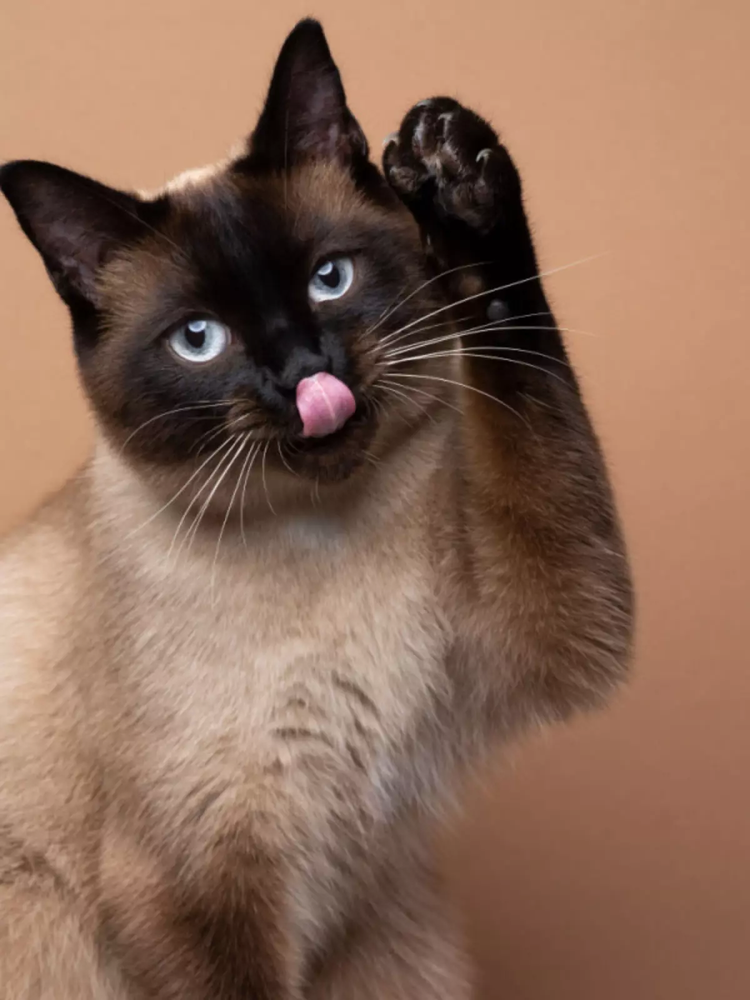
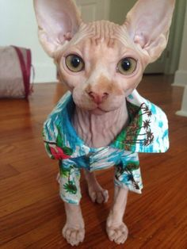

Raças de Gatos
Conheça algumas das raças de gatos mais populares e suas características!

Siamês
O Siamês é uma das raças mais conhecidas e populares. Eles têm um temperamento afetuoso, são muito apegados aos seus donos e adoram interagir. Sua pelagem é curta e seus olhos são azuis penetrantes.

Persa
Os gatos da raça Persa possuem uma pelagem longa e fofa, além de um rosto arredondado e olhos grandes. São conhecidos por seu comportamento tranquilo e por serem ótimos companheiros domésticos.

Maine Coon
O Maine Coon é uma das maiores raças de gatos. São amigáveis, sociáveis e muito inteligentes. Possuem uma pelagem densa e orelhas grandes e pontudas, que lhes conferem um visual único.

Sphynx
O Sphynx é conhecido por ser uma raça sem pelos, o que lhes dá uma aparência única e exótica. São extremamente afetuosos e apegados aos seus donos, além de serem muito brincalhões.

British Shorthair
Com seu corpo robusto e rosto arredondado, o British Shorthair é conhecido por sua independência e tranquilidade. Eles são gatos fáceis de cuidar e muito leais aos seus donos.